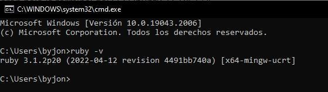
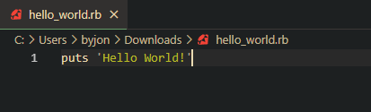
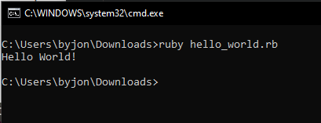

Ejemplo práctico de Ruby
Una vez instalado Ruby abre la terminal o cmd y ejecutas:
$ ruby -vCon este comando podrás ver la versión instalada de Ruby:
Se puede editar un fichero con extensión .rb para programar nuestro primer programa. En este caso crearemos el fichero hello_world.rb
Para ejecutar el programa, en la terminal o cmd, ejecutamos el comando:
$ ruby [nombre del fichero].rb
$ ruby hello_world.rbEl resultado será el siguiente:
Gemas
Una gema es la distribución de programas, módulos o librerías que extienden funcionalidad, casi siempre específica, y que permiten aplicar el concepto: Don't Repeat Yourself, es decir, “No Tener que Repetirnos”. De esta forma podemos usar gemas en nuestro código para añadir una funcionalidad que ya ha sido implementada por otro desarrollador. Para saber más sobre las gemas de Ruby puedes visitar la página oficial: www.rubygems.org.